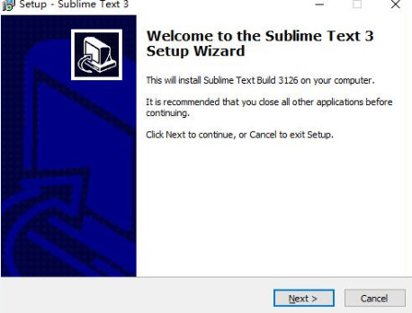
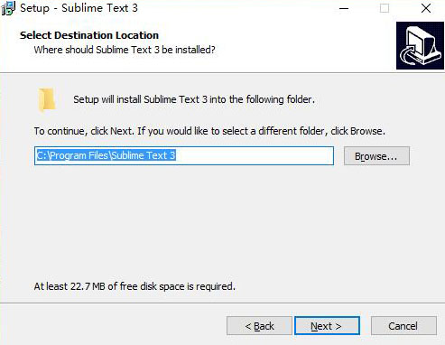
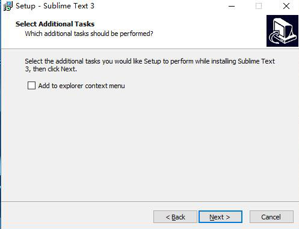
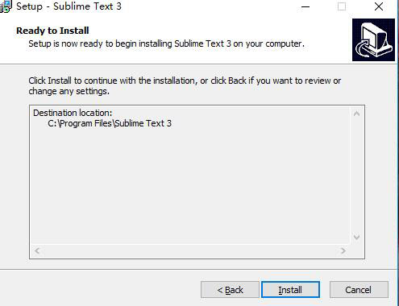
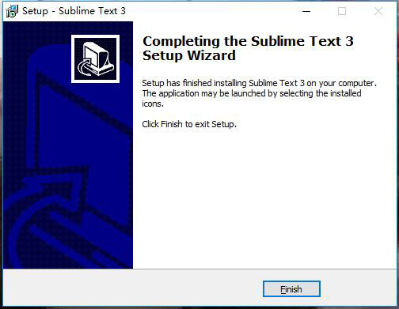
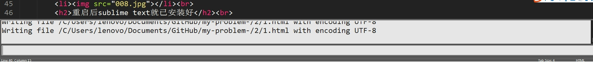
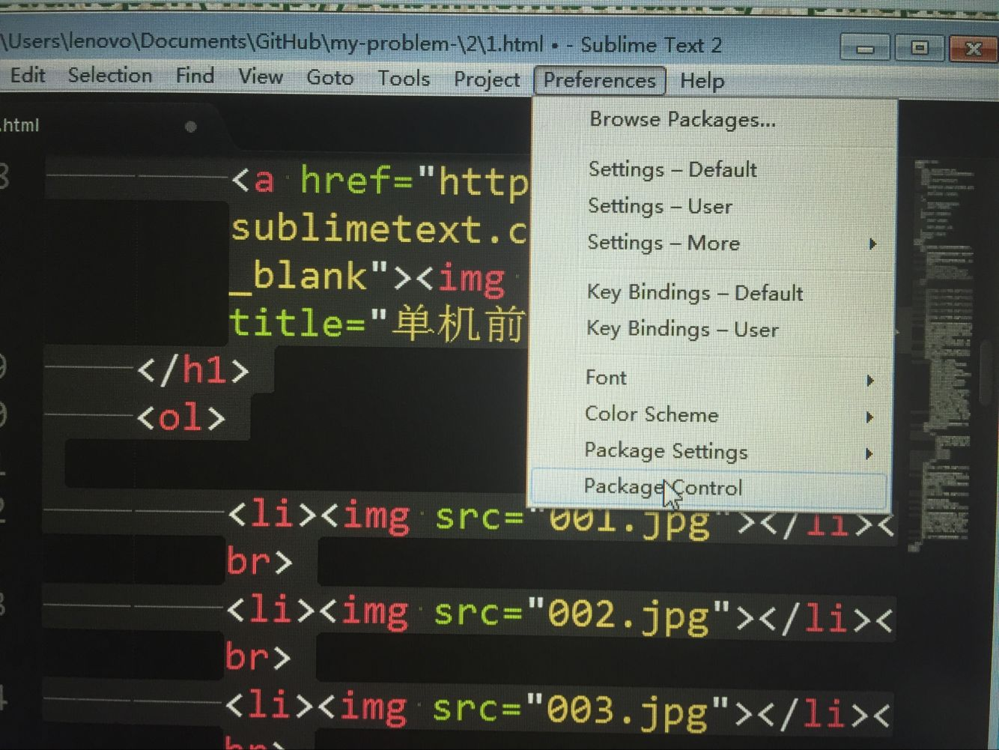
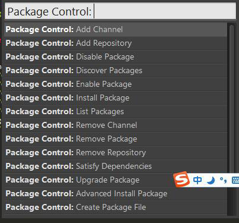
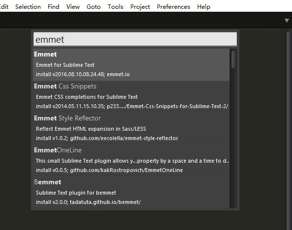
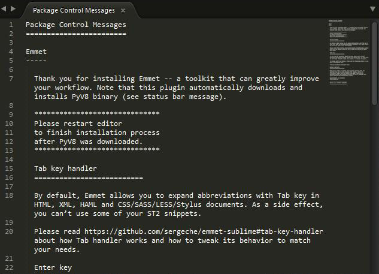

sublime text3的安装步骤如下:
打开后按照默认的选项一直点击“next”
直到出现“finish”单机完成。
- 
- 
- 
- 
- 
到这里为止我们成功安装了sublime text，但是这只是一个编译器，如果我们想要更好的使用它我们就需要安装emmet，我们该如何安装呢？
- 首先打开sublime text，然后按下“Ctrl+~”打开控制台

- 在控制台输入如下的Python命令：
“import urllib.request,os;pf='Package Control.sublime-package';ipp=sublime.installed_packages_path();urllib.request.install_opener(urllib.request.build_opener(urllib.request.ProxyHandler()));open(os.path.join(ipp,pf),'wb').write(urllib.request.urlopen('http://sublime.wbond.net/'+pf.replace(' ','%20')).read())”
- 然后回车安装，安装完了之后重启软件即可。ps:请注意，上述是sublime text 3的代码
接下来我们讲解常用的一些插件的安装
- 点击preferences里的package control。

- 接着输入并找到install package。

- 跳出窗口中输入emmet，选择emmet插件即可，稍等片刻，即可完成安装。

- 重启后sublime text就已安装好
上述所讲的只是一个最普遍的插件安装，如果你还想安装其他更实用的插件请单击下图（0_0）
感谢您的观看！！！